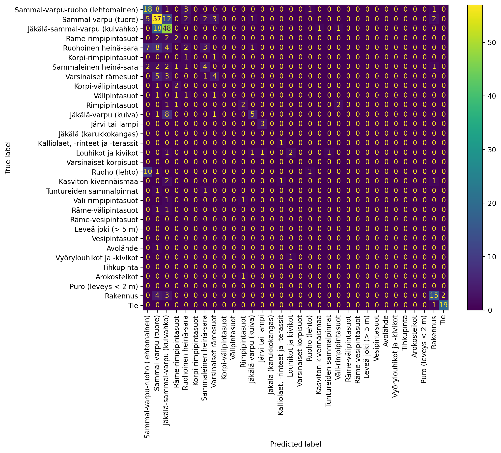

import geopandas as gpd
import os
from pathlib import Path
import torch
from tqdm import tqdm
from itertools import product
from fastcore.basics import ifnone
import numpy as np
from matplotlib import pyplot as plt
from torch.utils.data import DataLoader, TensorDataset
from sklearn.ensemble import RandomForestClassifier, GradientBoostingClassifier, HistGradientBoostingClassifier
from sklearn.preprocessing import LabelEncoder
from sklearn.model_selection import train_test_split
from sklearn.metrics import classification_report, ConfusionMatrixDisplay, confusion_matrix
import sys
sys.path.append('..')
from presto import Presto, construct_single_presto_input
device = 'cuda' if torch.cuda.is_available() else 'cpu'Using Presto for downstream task
Now that all of the data is processed, next step is to feed it to Presto and use the embeddings for classification.
First read the data and convert it to epsg:4326, as one of the inputs to Presto is latlon.
gdf = gpd.read_file('../data/sampled_data.gpkg').to_crs('epsg:4326')
gdf.head()| label | InvLK | elevation | slope | precipitation_2020_1 | precipitation_2020_2 | precipitation_2020_3 | precipitation_2020_4 | precipitation_2020_5 | precipitation_2020_6 | ... | B8A_2022_4 | B8A_2022_5 | B8A_2022_6 | B8A_2022_7 | B8A_2022_8 | B8A_2022_9 | B8A_2022_10 | B8A_2022_11 | B8A_2022_12 | geometry | |
|---|---|---|---|---|---|---|---|---|---|---|---|---|---|---|---|---|---|---|---|---|---|
| 0 | Sammal-varpu-ruoho (lehtomainen) | 251 | 275.101013 | 9.585938 | 56.578560 | 49.518848 | 42.750782 | 25.724018 | 40.207382 | 48.631065 | ... | 6520.0 | 2730.0 | 3558.0 | 4075.0 | 3867.0 | 1868.0 | NaN | NaN | NaN | POINT (27.33389 69.95989) |
| 1 | Sammal-varpu (tuore) | 242 | 258.298004 | 11.140625 | 56.578560 | 49.518848 | 42.750782 | 25.724018 | 40.207382 | 48.631065 | ... | 7808.0 | 3302.0 | 3610.5 | 4269.0 | 4022.0 | 2398.5 | NaN | NaN | NaN | POINT (27.34913 69.95722) |
| 2 | Sammal-varpu-ruoho (lehtomainen) | 251 | 253.636993 | 12.406250 | 56.578560 | 49.518848 | 42.750782 | 25.724018 | 40.207382 | 48.631065 | ... | 6526.0 | 3434.0 | 4079.5 | 5098.0 | 3191.0 | 2553.0 | NaN | NaN | NaN | POINT (27.35595 69.95753) |
| 3 | Sammal-varpu (tuore) | 242 | 254.406998 | 8.546875 | 56.578560 | 49.518848 | 42.750782 | 25.724018 | 40.207382 | 48.631065 | ... | 7326.0 | 3515.0 | 3626.0 | 4235.0 | 4046.0 | 2737.5 | NaN | NaN | NaN | POINT (27.35055 69.9519) |
| 4 | Sammal-varpu (tuore) | 242 | 274.809998 | 10.632812 | 58.559845 | 53.056049 | 43.816322 | 26.595482 | 42.261738 | 50.804619 | ... | 9489.0 | 3514.0 | 3420.5 | 3384.0 | 3110.0 | 3433.0 | 4417.0 | NaN | NaN | POINT (27.36722 69.9478) |
5 rows × 509 columns
Check the dimensions of the dataframe.
gdf.shape(1397, 509)Next, specify
years_to_use. The maximum lenght is 24 months- Band names for Presto, and extracting the data from dataframes
years_to_use = [2020,2021]
s2_bands = ['B01', 'B02', 'B03', 'B04', 'B05', 'B06', 'B07', 'B08', 'B8A', 'B11', 'B12']
s2_bands_for_presto = ['B1','B2', 'B3', 'B4', 'B5', 'B6', 'B7', 'B8', 'B8A', 'B11', 'B12']
era5_bands = ['temperature_2m', 'total_precipitation']
srtm_bands = ['elevation', 'slope']
s2_datacols = [f'{b}_{y}_{m}' for b,y,m in product(s2_bands,years_to_use,range(1,13))]
era5_datacols = [f'{b}_{y}_{m}' for b, y, m in product(['temperature', 'precipitation'], years_to_use, range(1,13))]construct_single_presto_input handles converting the data to presto suitable format. Here we do some reshaping and conversion:
- For S2 (and S1 provided it’s available) data, the data is reshaped into a
[11, 12*n_years]matrix, so that each band has full time series - Data corresponding to ERA5 bands has to be converted so that
- Temperature is in Kelvin (so add 273.15 to it) and temperature is in meters (so multiply it with 0.001).
- Elevation data is constant for each timestep
Finally all locations with nan are masked.
def construct_single_presto_input_batched(gdf, s2_datacols, era5_datacols, n_years=1):
inp_len = len(gdf)
arrays, masks, dws = [], [], []
for i in tqdm(range(inp_len)):
x, mask, dw = construct_single_presto_input(
s1=None,
s1_bands=None,
s2=torch.from_numpy(gdf[s2_datacols].iloc[i].values.reshape((11,12*n_years))).to(torch.float32).T,
s2_bands=s2_bands_for_presto,
era5=torch.from_numpy((gdf[era5_datacols].iloc[i].values.reshape(2,12*n_years).T + [273.15, 0]) * [1, 0.001]).to(torch.float32),
era5_bands=era5_bands,
srtm=torch.from_numpy(np.array([(gdf['elevation'].iloc[i], gdf['slope'].iloc[i]) for _ in range(12*n_years)])).to(torch.float32),
srtm_bands=srtm_bands,
normalize=True
)
# Detect nan locations and mask them
x_nans = torch.isnan(x)
mask[x_nans] = 1
x = torch.nan_to_num(x)
arrays.append(x); masks.append(mask); dws.append(dw)
return (torch.stack(arrays), torch.stack(masks), torch.stack(dws))As mentioned before, one of the inputs are latlons, so get them into a tensor as well.
latlons = torch.tensor(np.stack([gdf.geometry.y.values, gdf.geometry.x.values], axis=1))Create the tensors
x, mask, dw = construct_single_presto_input_batched(gdf, s2_datacols, era5_datacols, n_years=len(years_to_use))100%|██████████████████████████████████████████████████████████████| 1397/1397 [00:02<00:00, 563.19it/s]Put them into a tuple
ds = (
x.to(device),
mask.to(device),
dw.to(device),
latlons.to(device)
)Specify start month for the data. 0 is January.
month = torch.tensor([0] * ds[0].shape[0]).long().to(device)And create the dataloader
dl = DataLoader(
TensorDataset(
ds[0].float(), # x
ds[1].bool(), # mask
ds[2].long(), # dynamic world
ds[3].float(), # latlons
month,
),
batch_size=64,
shuffle=False,
)Next, Construct the model, load state dict and put it into same device than all the other data.
model = Presto.construct()
model.load_state_dict(torch.load('../models/default_model.pt', map_location=device))
model.to(device)Presto(
(encoder): Encoder(
(eo_patch_embed): ModuleDict(
(S1): Linear(in_features=2, out_features=128, bias=True)
(S2_RGB): Linear(in_features=3, out_features=128, bias=True)
(S2_Red_Edge): Linear(in_features=3, out_features=128, bias=True)
(S2_NIR_10m): Linear(in_features=1, out_features=128, bias=True)
(S2_NIR_20m): Linear(in_features=1, out_features=128, bias=True)
(S2_SWIR): Linear(in_features=2, out_features=128, bias=True)
(ERA5): Linear(in_features=2, out_features=128, bias=True)
(SRTM): Linear(in_features=2, out_features=128, bias=True)
(NDVI): Linear(in_features=1, out_features=128, bias=True)
)
(dw_embed): Embedding(10, 128)
(latlon_embed): Linear(in_features=3, out_features=128, bias=True)
(blocks): ModuleList(
(0-1): 2 x Block(
(norm1): LayerNorm((128,), eps=1e-05, elementwise_affine=True)
(attn): Attention(
(qkv): Linear(in_features=128, out_features=384, bias=True)
(q_norm): Identity()
(k_norm): Identity()
(attn_drop): Dropout(p=0.0, inplace=False)
(proj): Linear(in_features=128, out_features=128, bias=True)
(proj_drop): Dropout(p=0.0, inplace=False)
)
(ls1): Identity()
(norm2): LayerNorm((128,), eps=1e-05, elementwise_affine=True)
(mlp): Mlp(
(fc1): Linear(in_features=128, out_features=512, bias=True)
(act): GELU(approximate='none')
(drop1): Dropout(p=0.0, inplace=False)
(fc2): Linear(in_features=512, out_features=128, bias=True)
(drop2): Dropout(p=0.0, inplace=False)
)
(ls2): Identity()
)
)
(norm): LayerNorm((128,), eps=1e-05, elementwise_affine=True)
(month_embed): Embedding(12, 32)
(channel_embed): Embedding(10, 32)
)
(decoder): Decoder(
(decoder_embed): Linear(in_features=128, out_features=128, bias=True)
(decoder_blocks): ModuleList(
(0-1): 2 x Block(
(norm1): LayerNorm((128,), eps=1e-05, elementwise_affine=True)
(attn): Attention(
(qkv): Linear(in_features=128, out_features=384, bias=True)
(q_norm): Identity()
(k_norm): Identity()
(attn_drop): Dropout(p=0.0, inplace=False)
(proj): Linear(in_features=128, out_features=128, bias=True)
(proj_drop): Dropout(p=0.0, inplace=False)
)
(ls1): Identity()
(norm2): LayerNorm((128,), eps=1e-05, elementwise_affine=True)
(mlp): Mlp(
(fc1): Linear(in_features=128, out_features=512, bias=True)
(act): GELU(approximate='none')
(drop1): Dropout(p=0.0, inplace=False)
(fc2): Linear(in_features=512, out_features=128, bias=True)
(drop2): Dropout(p=0.0, inplace=False)
)
(ls2): Identity()
)
)
(decoder_norm): LayerNorm((128,), eps=1e-05, elementwise_affine=True)
(eo_decoder_pred): ModuleDict(
(S1): Linear(in_features=128, out_features=2, bias=True)
(S2_RGB): Linear(in_features=128, out_features=3, bias=True)
(S2_Red_Edge): Linear(in_features=128, out_features=3, bias=True)
(S2_NIR_10m): Linear(in_features=128, out_features=1, bias=True)
(S2_NIR_20m): Linear(in_features=128, out_features=1, bias=True)
(S2_SWIR): Linear(in_features=128, out_features=2, bias=True)
(ERA5): Linear(in_features=128, out_features=2, bias=True)
(SRTM): Linear(in_features=128, out_features=2, bias=True)
(NDVI): Linear(in_features=128, out_features=1, bias=True)
)
(dw_decoder_pred): Linear(in_features=128, out_features=9, bias=True)
(channel_embeddings): Embedding(10, 32)
(month_embed): Embedding(12, 48)
)
)Now Presto can be used to generate embeddings for the data.
embeddings = []
for (x, mask, dw, latlons, month) in tqdm(dl):
with torch.no_grad():
model.eval()
embeddings.append(model.encoder(x=x, mask=mask, dynamic_world=dw, latlons=latlons, month=month).cpu())100%|███████████████████████████████████████████████████████████████████| 22/22 [00:01<00:00, 12.80it/s]These embeddings can then be used with e.g. RandomForestClassifier.
First, encode the habitat type labels into integers.
le = LabelEncoder()
le.fit(gdf.label.unique())
gdf['enc_label'] = le.transform(gdf.label)Initialize classifier
clf_all = RandomForestClassifier(n_estimators=500, oob_score=True)
#clf_all = GradientBoostingClassifier(subsample=0.7, max_depth=5)
#clf_all = HistGradientBoostingClassifier()Move the embeddings to cpu, split into train and test sets and fit the classifier
lin_embeddings = torch.concat(embeddings).cpu().numpy()
x_train, x_test, y_train, y_test = train_test_split(lin_embeddings, gdf.enc_label, random_state=55)
clf_all.fit(x_train, y_train)RandomForestClassifier(n_estimators=500, oob_score=True)In a Jupyter environment, please rerun this cell to show the HTML representation or trust the notebook.
On GitHub, the HTML representation is unable to render, please try loading this page with nbviewer.org.
Parameters
| n_estimators | 500 | |
| criterion | 'gini' | |
| max_depth | None | |
| min_samples_split | 2 | |
| min_samples_leaf | 1 | |
| min_weight_fraction_leaf | 0.0 | |
| max_features | 'sqrt' | |
| max_leaf_nodes | None | |
| min_impurity_decrease | 0.0 | |
| bootstrap | True | |
| oob_score | True | |
| n_jobs | None | |
| random_state | None | |
| verbose | 0 | |
| warm_start | False | |
| class_weight | None | |
| ccp_alpha | 0.0 | |
| max_samples | None | |
| monotonic_cst | None |
Next get the predictions and see the performance.
y_pred = clf_all.predict(x_test)print(classification_report(y_test, y_pred, labels=gdf.enc_label.unique(), target_names=gdf.label.unique(), zero_division=np.nan)) precision recall f1-score support
Sammal-varpu-ruoho (lehtomainen) 0.43 0.56 0.49 32
Sammal-varpu (tuore) 0.51 0.68 0.58 84
Jäkälä-sammal-varpu (kuivahko) 0.54 0.71 0.61 68
Räme-rimpipintasuot 0.29 0.33 0.31 6
Ruohoinen heinä-sara 0.20 0.08 0.11 25
Korpi-rimpipintasuot nan 0.00 0.00 2
Sammaleinen heinä-sara 0.36 0.31 0.33 13
Varsinaiset rämesuot 0.40 0.31 0.35 13
Korpi-välipintasuot nan 0.00 0.00 3
Välipintasuot nan 0.00 0.00 4
Rimpipintasuot 0.50 0.33 0.40 6
Jäkälä-varpu (kuiva) 0.62 0.33 0.43 15
Järvi tai lampi 0.75 1.00 0.86 3
Jäkälä (karukkokangas) nan nan nan 0
Kalliolaet, -rinteet ja -terassit 0.50 1.00 0.67 1
Louhikot ja kivikot 0.67 0.33 0.44 6
Varsinaiset korpisuot nan nan nan 0
Ruoho (lehto) 0.50 0.08 0.14 12
Kasviton kivennäismaa 0.00 0.00 0.00 4
Tuntureiden sammalpinnat 0.00 0.00 0.00 2
Väli-rimpipintasuot 0.00 0.00 0.00 2
Räme-välipintasuot nan 0.00 0.00 2
Räme-vesipintasuot nan nan nan 0
Leveä joki (> 5 m) nan nan nan 0
Vesipintasuot nan nan nan 0
Avolähde nan 0.00 0.00 1
Vyörylouhikot ja -kivikot nan 0.00 0.00 1
Tihkupinta nan nan nan 0
Arokosteikot nan 0.00 0.00 1
Puro (leveys < 2 m) nan nan nan 0
Rakennus 0.71 0.62 0.67 24
Tie 0.90 0.95 0.93 20
accuracy 0.52 350
macro avg 0.44 0.31 0.29 350
weighted avg 0.51 0.52 0.49 350
fig, ax = plt.subplots(1,1,dpi=200, figsize=(10,8))
disp = ConfusionMatrixDisplay.from_estimator(clf_all, x_test, y_test, labels=gdf.enc_label.unique(), normalize=None,
display_labels=gdf.label.unique(), ax=ax, xticks_rotation='vertical')